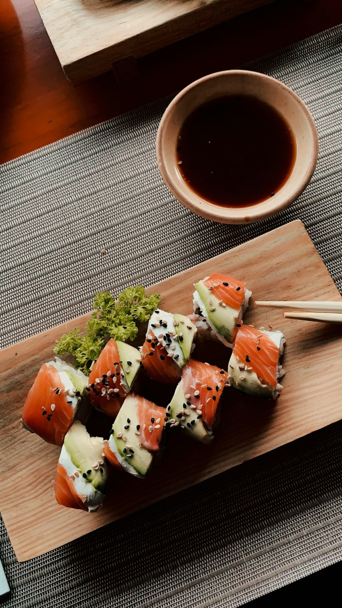

Back to Home
Sushi

Description
Sushi is a traditional Japanese dish made with vinegared rice and various toppings such as raw fish, vegetables, and seaweed. It's a delicate and flavorful meal that's popular worldwide.
In this recipe, we'll guide you through the steps to create delicious sushi at home, including preparing the rice and selecting the right toppings.
Ingredients
- 2 cups short-grain sushi rice
- 2 1/2 cups water
- 3 tablespoons rice vinegar
- 1 tablespoon sugar
- 1 teaspoon salt
- 1/2 cup soy sauce
- 1 tablespoon mirin
- 1 teaspoon sesame oil
- 1 cucumber, julienned
- 1 avocado, sliced
- 8 oz fresh tuna, sliced
Steps
- Rinse the sushi rice in cold water until the water runs clear. Cook the rice in a pot with water according to package instructions.
- In a small bowl, mix together the rice vinegar, sugar, and salt. Set aside.
- Once the rice is cooked, transfer it to a large bowl and gently fold in the vinegar mixture. Let it cool to room temperature.
- Prepare the toppings by slicing the cucumber, avocado, and tuna.
- Place a sheet of nori on a bamboo mat and spread a thin layer of cooled sushi rice over it.
- Add your desired toppings in a line across the center of the rice.
- Carefully roll the nori and rice around the fillings using the bamboo mat.
- Cut the roll into bite-sized pieces with a sharp knife.
< li>Serve with soy sauce and wasabi for dipping.